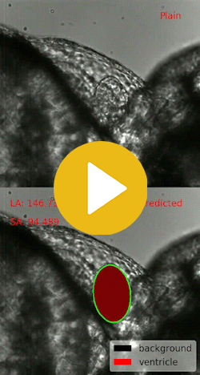

Research
Multi-endpoint quantitative evaluation on zebrafish cardiovascular video


Advisor: Prof. Yanbin Zhao• Feb. 2019 - Exp. Nov. 2019
- Implemented end-to-end video segmentation model to detect parameters of zebrafish ventricle based on a customized Unet with pretrained ResNet encoder, reaching IoU at 91% and videos whose parameter error below 10% conform to 90%
- Proposed two interactive methods to detect artery parameters based on customized canny detector with OpenCV, raising detection rate from 75\% to 88\% and 20 times reducing time consumption
- Built model for detecting pericardial effusion and ventrical wall thickness, based on adaptive floodfill and spectral clustering, to provide enough generalization for various input
- Improved model from data collection, proposed best possible video shooting setup based on Unet architecture and test results of different setups
Analysis of Stormwater Quality Data from Online Sensors on Highway
Advisor: Prof. Luca Vezzaro• Feb. 2018 - June 2018
- Analyzed and interpreted three-year spatiotemporal data of highway runoff quality, collaborating with SWIgroup Italy
- Applied xgboost for short-term model and LSTM for 24h prediction, to forecast the possible pollution events, which reached RMSE to 0.29/0.35 respectively, reliable enough for stormwater effect
- Implemented spectrum and factor analysis to detect patterns and explained impact of different parameters under maximal information coefficient, showing temperature and pH have significantly affected conductivity
- Proposed a mixed spatiotemporal interpolation method for completing outliers detected by LOF and missing values, to reach both higher spatial and temporal autocorrelation